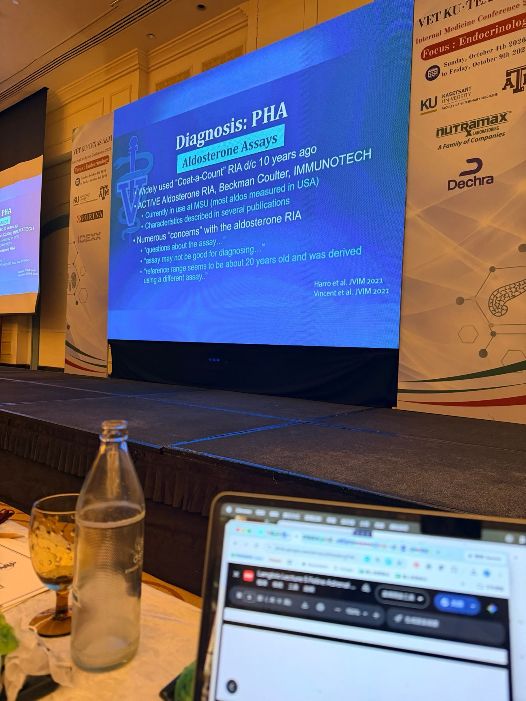
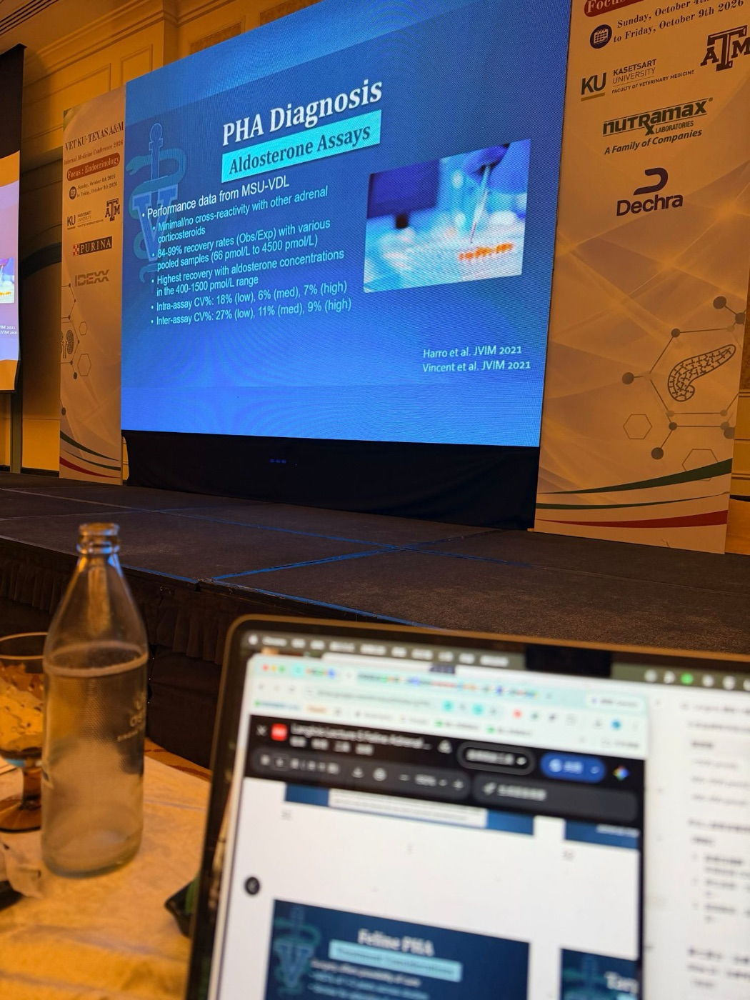
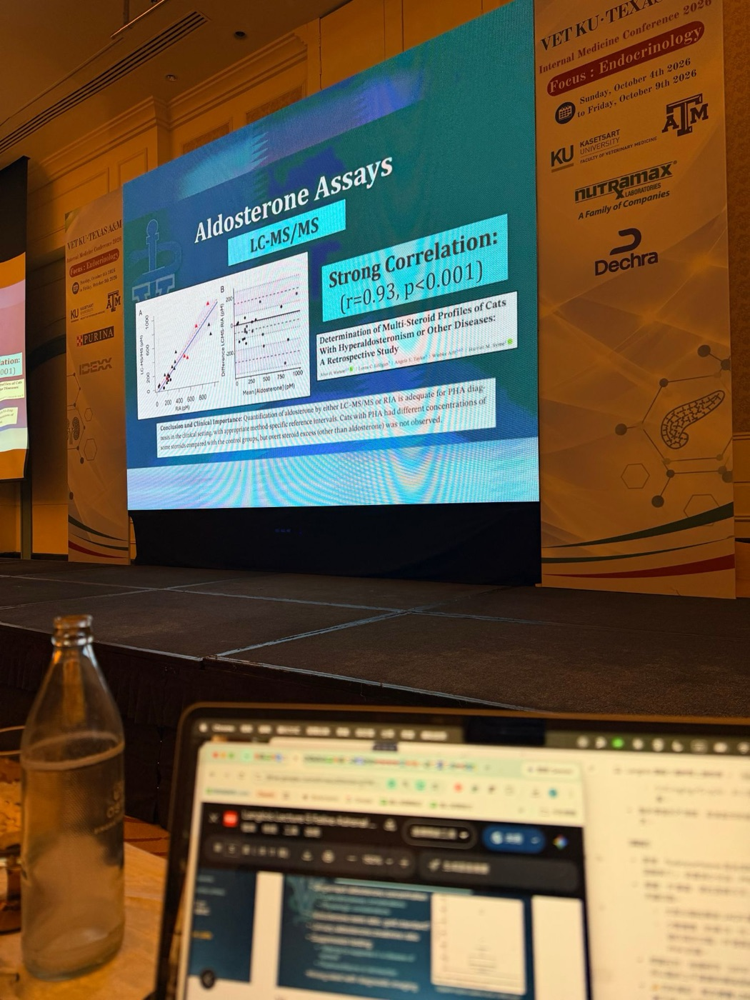
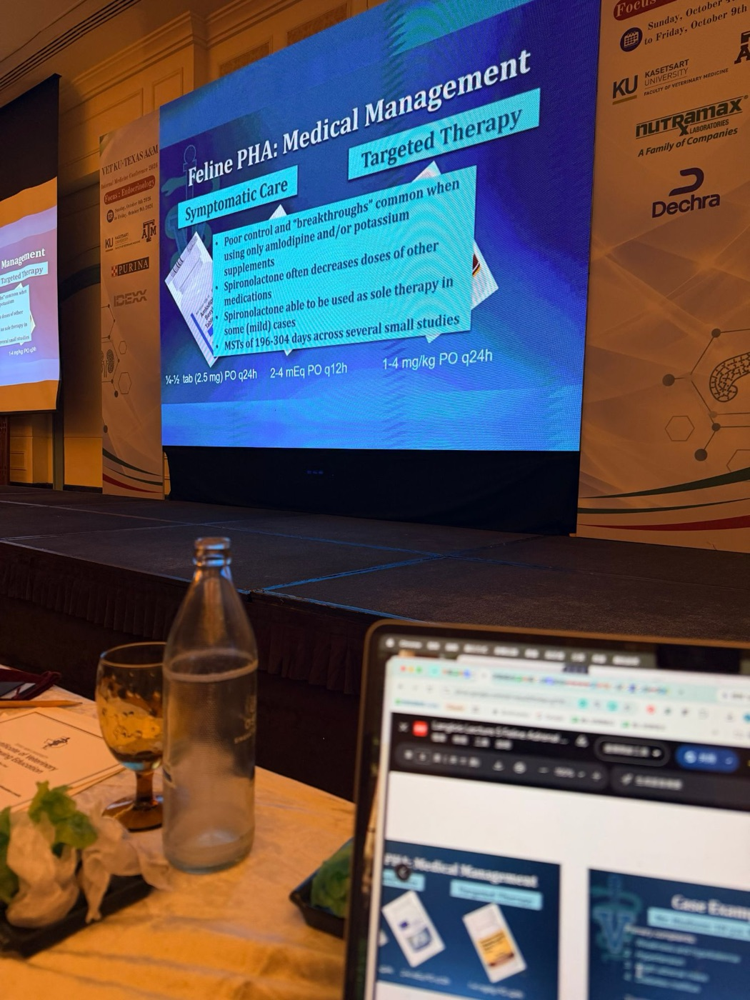
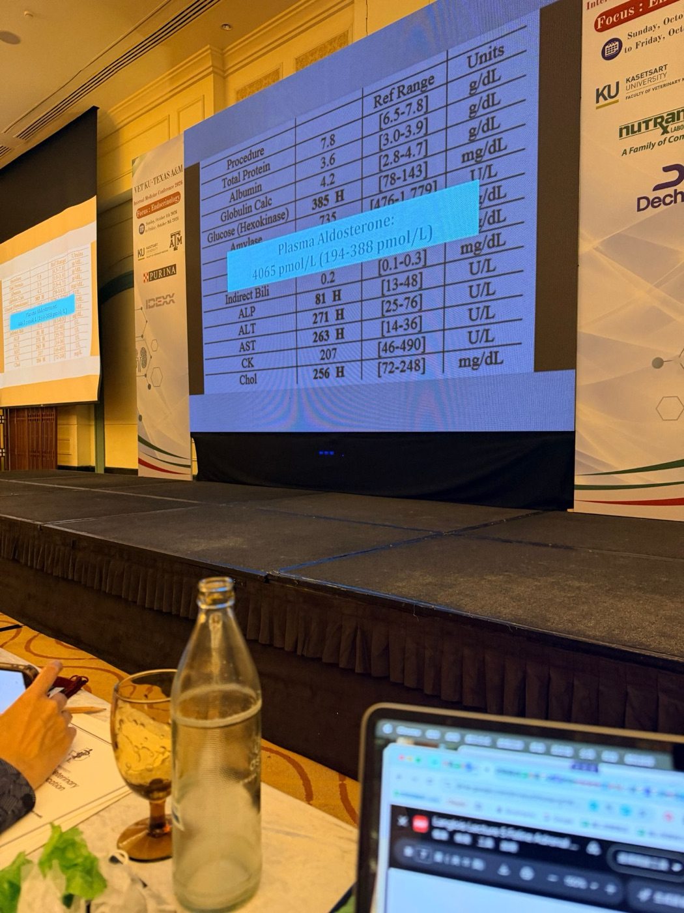

貓的腎上腺疾病：高醛固酮症、多激素與性激素分泌腫瘤
主講：Daniel K. Langlois, DVM, DACVIM｜密西根州立大學（MSU）獸醫學院內科教授
2026 年 10 月 9 日｜VET-KU × Texas A&M 內科研討會｜場次 22｜Langlois Lecture 5
🎧 課堂錄音與逐字稿（Plaud）↗⭐ 必記原則
- 狗的功能性腎上腺腫瘤以皮質醇為主；貓則以醛固酮最常見，MSU 的排序是醛固酮 > 多激素 > 性激素，庫欣一年只有幾隻
- 貓 PHA 兩大臨床特徵：高血壓、多發性肌病（MSU：頸部腹屈 33%、後肢無力 25%，更多只是沒精神）；三大生化特徵：低血鉀、CK 升高、代謝性鹼中毒
- 「哪一隻貓是 PHA」答案是 Cat 2：關鍵是 HCO₃⁻ 偏高。CKD 傾向酸中毒，PHA 傾向鹼中毒
- 低血鉀＋高血壓常被歸給 CKD 或甲亢，但甲亢很少造成嚴重高血壓或嚴重低血鉀；CKD 除非很嚴重或厭食，也少見嚴重低血鉀
- 中老年、低血鉀又高血壓的貓都該驗 PHA；單獨低血鉀或單獨高血壓（>180 mmHg）也要考慮
- 實務診斷：低血鉀當下測醛固酮。>1000 pmol/L 強烈懷疑（約 90% 病貓）；800–1000 可疑；400–800 不太像腫瘤
- 再加上超音波找到腎上腺腫塊，三者（高醛固酮、腫塊、低血鉀）就足以診斷，不需要腎素或抑制試驗
- 手術可治癒，腺瘤與腺癌的中位存活都是 1–3 年；但病貓多半是 13 歲上下、有共病，MSU 手術費約 5000–6000 美元，多數飼主拒絕
- 內科：amlodipine 控血壓、葡萄糖酸鉀補鉀、spironolactone 1–4 mg/kg q24h 拮抗醛固酮；只用前兩者常控制不好；內科中位存活約 6–8 個月，腫瘤會越來越難控制
- PHA 貓若有糖尿病或皮膚變化，要驗黃體素／皮質酮：約 1/4 的 PHA 貓黃體素 >10 nmol/L
- 對側腎上腺萎縮＝腫瘤還分泌有糖皮質激素作用的東西，術後可能暫時性 Addison；有糖尿病的貓切除後多數緩解
- 貓庫欣：>80% 有糖尿病、>50% 皮膚變薄、1/3 皮膚脆弱；首選 LDDST（劑量是狗的 10 倍），治療首選 trilostane
- 公貓結紮後出現陰莖倒刺、尿臭、亂尿尿：想到分泌雄性素（androstenedione）的腎上腺腫瘤
場次資訊與大綱
▾講者與大綱
- 講者 Daniel K. Langlois，DVM、DACVIM，MSU 獸醫學院內科教授。
- 主軸：高醛固酮症，以及多激素與性激素異常。
- 以病例帶出：如何辨識、診斷、處理。
- 🎤 講者家裡近年改養不掉毛的狗：一隻伯恩杜德犬（Bernedoodle）和一隻標準貴賓。
- 🎤 病例大多來自 MSU 內分泌實驗室。

1. 醛固酮與 Conn 症候群
▾醛固酮的作用與分泌調控
- 主要的礦物皮質素，由腎上腺皮質球狀帶（zona glomerulosa）分泌。
- 作用在腎臟遠曲小管（DRT）與集尿管（CD）：
- 主細胞（principal cells）：再吸收 Na⁺、排出 K⁺
- 間細胞（intercalated cells）：Na⁺/H⁺ 交換（排 H⁺）
- 分泌的主要刺激：血漿 K⁺ 與 RAAS；ACTH 與 Na⁺ 是次要因素。
- 🎤 血鉀直接作用在腎上腺；血鈉頂多有很輕微的影響（可能是透過活化腎素）；ACTH 只有「允許性」作用。所有物種最大的驅動因子都是血鉀和腎素。

💡 把作用位置記起來，PHA 的三個生化特徵就推得出來：主細胞排 K⁺ → 低血鉀；間細胞排 H⁺ → 代謝性鹼中毒；保鈉保水 → 高血壓。低血鉀再造成低血鉀性肌病與 CK 升高。
Conn 症候群與人類的 PHA

- Conn 症候群＝功能性腎上腺皮質腫瘤造成的原發性高醛固酮症（PHA）。
- 🎤 Conn 是密西根大學的醫師（離 MSU 不遠）。第一位病人是一位中年女性：嚴重的後肢輕癱，無力到下不了床；積極靜脈補鉀後暫時好轉，但幾天內又復發；合併嚴重高血壓和凹陷性水腫，最後找到腎上腺腫瘤。
- 人類 PHA 的病因（由常見到少見）：雙側特發性增生 > Conn 症候群（腺瘤）> 原發性腎上腺增生 > 腎上腺皮質癌 > 家族性 > 異位性（Young 2007）。
- 💡 人類 PHA 以雙側增生為主，貓則以單側腫瘤為主（下一節）。
- 🎤 在人醫，腎上腺增生可能是 PHA 的首要病因，而醛固酮過高可能是美國頑固性高血壓的第一名原因。
2. 貓 PHA：病因與盛行
▾第一個病例（1983）

- 1983 年首次報告。
- 全身無力，低血鉀 1.7 mmol/L。
- 血清與尿液醛固酮「偏高」。
- 尿毒症逐漸惡化、身體衰弱。
- 剖檢：腎上腺皮質癌（ACC）。
- 🎤 貓的 PHA 比人醫晚了約 30 年。當時沒有獸醫驗證過的醛固酮檢測，他們買了套組來驗，數值高達幾千，雖然不知道正常值是多少，但看起來非常高。
病因

- 腎上腺皮質腫瘤為主：
- 最常見單側
- 腺瘤與腺癌都有
- 少數是雙側腫瘤
- 雙側增生？（問號：存在，但角色仍有爭議）
- 🎤 腺瘤和腺癌大約各半。即使組織學是癌，行為也不像人的腎上腺皮質癌，通常很慢才轉移到遠端器官。
- 🎤 貓的特發性腎上腺增生很有爭議，接受度遠不如人醫，這堂課不多談。
- 💡 Javadi 等人的論文提出：雙側結節性增生造成的低度 PHA，可能是部分貓 CKD 惡化的推手。這也是 📄 25「氮血症是 PHA 的後果還是巧合？」的背景。
報告越來越多
| 年代 | PubMed 發表數（hyperaldosteronism cat veterinary） |
|---|---|
| 1980–1989 | 1 |
| 1990–1999 | 4 |
| 2000–2009 | 約 10 |
| 2010–2019 | 約 15 |
💡 增加的主要是「有人去驗」，不一定是疾病真的變多。這就是第 5 節「有認知才有診斷」的意思。
🎤 講者也說，不是盛行率真的增加，而是終於開始辨識出這些病例。
3. 三隻貓，哪一隻是 PHA？
▾三隻貓的病史
| Cat 1 | Cat 2 | Cat 3 | |
|---|---|---|---|
| 訊號 | 14 歲 F/S DSH | 9 歲 F/S DSH | 15 歲 M/N DSH |
| 病史（3 個月） | PU/PD、視覺異常、體重減輕 | PU/PD、無力、體重減輕 | PU/PD、嘔吐、體重減輕、食慾增加 |
生化檢驗
| 項目 | 參考值 | Cat 1 | Cat 2 | Cat 3 |
|---|---|---|---|---|
| BUN (mg/dL) | 19–36 | 135 H | 39 H | 33 |
| Creatinine (mg/dL) | 1.0–2.3 | 3.8 H | 2.1 | 1.7 |
| Na (mmol/L) | 145–155 | 148 | 154 | 148 |
| K (mmol/L) | 3.8–5.4 | 3.3 L | 2.2 L | 3.6 L |
| Cl (mmol/L) | 110–123 | 111 | 119 | 111 |
| HCO₃⁻ (mmol/L) | 13–22 | 11 L | 25 H | 18 |
| Ca (mg/dL) | 9.1–10.7 | 10.4 | 10.4 | 10.0 |
| P (mg/dL) | 2.7–5.7 | 6.1 H | 5.0 | 4.5 |
| Mg (mg/dL) | 1.8–2.5 | 2.3 | 2.3 | 2.0 |
| TP／Alb (g/dL) | 6.5–7.8／3.0–3.9 | 6.9／3.4 | 7.0／3.2 | 6.5／3.0 |
| Globulin (g/dL) | 2.8–4.7 | 3.5 | 3.8 | 3.5 |
| Glucose (mg/dL) | 78–143 | 98 | 113 | 140 |
| ALP (U/L) | 13–48 | 44 | 16 | 244 H |
| ALT (U/L) | 25–76 | 52 | 71 | 202 H |
| AST (U/L) | 14–36 | 19 | 30 | 34 |
| CK (U/L) | 46–490 | 388 | 975 H | 404 |
| Chol (mg/dL) | 72–248 | 205 | 172 | 99 |
Amylase、膽紅素皆在參考範圍內，未列出。
哪一隻貓有 PHA？

- 🎤 最大的線索是 HCO₃⁻ 偏高。低血鉀是一個光譜，輕、中、重度都有，三隻都有並不稀奇。但大家常忽略：其他疾病（尤其腎病）會讓動物傾向酸中毒，PHA 則傾向鹼中毒。醛固酮不只影響鈉鉀，也是酸鹼平衡的重要角色。
- 🎤 Cat 1：中度氮血症，IRIS 第 3 期左右的不可逆 CKD，代謝性酸中毒；其餘生化沒什麼特別。視覺異常推測是高血壓性視網膜病變。
- 🎤 Cat 2：長期 PU/PD，主訴無力和精神沉鬱。輕度氮血症；肌酸酐 2.1 雖在參考範圍內，對貓來說可能已經不正常。中度低血鉀、HCO₃⁻ 稍高、CK 稍高。
- 🎤 Cat 3：PU/PD、嘔吐、體重減輕但多食；很輕微的低血鉀、肝指數輕度升高。
- 💡 原本整理時的推論（Cat 2 三個生化特徵全中）和講者答案一致。Cat 1、Cat 3 的病史則分別像 CKD 和甲亢。
4. 臨床與檢驗特徵
▾2 個臨床特徵＋3 個生化特徵
臨床特徵
- 高血壓
- 多發性肌病（polymyopathy）
生化特徵
- 低血鉀
- CK 升高
- 代謝性鹼中毒
- 🎤 臨床兩大表現：高血壓的後遺症（常是嚴重高血壓，收縮壓 >180–200 mmHg，有心、腎、眼、腦的標靶器官傷害風險），以及低血鉀造成的肌肉病變（無力、精神沉鬱）。
- 🎤 生化三大特徵：
- 低血鉀：>95% 的貓都有，輕、中、重度取決於在病程哪個階段抓到。
- CK 升高（肌肉同功酶，肌肉受損）：通常是中重度低血鉀的貓才會升高。
- 代謝性鹼中毒：約 85%。
- 🎤 血鈉通常正常，不是招牌特徵：鈉被吸收時水也跟著回來，所以全身總鈉增加，但測到的血鈉常常正常。總鈉增加正是高血壓的推手。
低血鉀性肌病

- 投影片是兩隻頸部腹屈（ventroflexion）、低頭站不穩的貓。
- 📸 現場 課堂上這張多了一個文字框，MSU 獸醫醫學中心的資料：
- 33% 的貓有頸部腹屈
- 25% 的貓有後肢無力
- → 非特異性的無力、精神沉鬱是極為常見的主訴
- 💡 典型的低頭姿勢只占 1/3，更多貓只是「沒精神、比較懶」，飼主常以為是老了。老貓精神變差時，驗個血鉀很值得。
- 🎤 講者說：在 MSU 約 1/3 的貓是以後肢輕癱或頸部腹屈來院，也就是因嚴重低血鉀造成嚴重的肌肉病變。會造成這種表現的鑑別診斷不多，例如鉛中毒、重症肌無力。
- 🎤 但更常見的是非特異性的無力和精神沉鬱。文獻大約各半；MSU 看到的病例多數是因低血鉀相關問題來院，但也有相當比例是因嚴重高血壓。
- 💡 頸部腹屈是貓低血鉀性肌病的典型姿勢，因為貓沒有項韌帶。其他鑑別：甲亢、硫胺素缺乏、有機磷中毒。
高血壓的眼部表現

💡 Cat 1 的「視覺異常」就是在提示這個。
🎤 高血壓相關的表現以眼睛最多，也就是高血壓性視網膜病變。文獻顯示約 35–40% 的 PHA 貓是因為這類高血壓問題來院。
其他和高血壓相關的發現
- 氮血症常見：是 PHA 造成的，還是剛好一起出現？
- 心臟病與心雜音常見。
- 可能有神經症狀。
- 摸得到腹部腫塊很少見。
- 🎤 診斷時的中位年齡是 13 歲，所以氮血症是 PHA 的後遺症，還是剛好是好發 CKD 族群本來就有的 CKD，並不清楚。
- 🎤 心雜音來自嚴重高血壓增加的後負荷。
- 🎤 第一例貓摸得到腹部腫塊，但很少見：多數腫瘤 <1.5 cm。
5. 為什麼常被漏診
▾講者的提問
🎤 講者說他到哪裡問都得到一樣的答案：少數人零星診斷過，多數人是「0 例」。重點是：沒有在找，就不會診斷。在美國大家開始比較會去驗，但仍常被漏掉，很多獸醫在中老年貓身上沒有把它列入鑑別。
有認知，才有診斷
- 同時有低血鉀和高血壓時，常被歸給 CKD 或甲亢：
- 甲亢很少造成嚴重高血壓或嚴重低血鉀。
- CKD 除非很嚴重，或同時厭食，否則很少造成嚴重低血鉀。
- 高血壓常被歸給 CKD 或特發性／原發性高血壓（在獸醫很少見），沒有深入檢查就開始治療。
- 🎤 過去很多沒被診斷的病例都被歸給 CKD，其中很多可能其實是 PHA。
- 🎤 講者也強調他不是說 PHA 很常見：不會一年看到 20 例，但 MSU 一年確實會診斷好幾例。
- 🎤 獸醫的特發性（原發性）高血壓其實非常少見。
- 🎤 篩檢越多低血鉀＋高血壓的貓，就越容易找到真正的 PHA。單獨低血鉀或單獨高血壓的 PHA 在文獻中也有完整描述。
6. 診斷檢測
▾醛固酮檢測的選項
- 單次血中醛固酮：要考慮實驗室與檢測方法、生理狀態（例如當下血鉀）。
- 醛固酮／腎素比（ARR）：黃金標準？
- 尿液醛固酮／肌酸酐比（UACR）
- 抑制試驗：「疾病是分泌過多，就試著去抑制它」，用 fludrocortisone 或 telmisartan。
- → 都要搭配影像學。
🎤 庫欣、Addison 這類腎上腺疾病，我們通常用「動態」功能試驗去操弄腎上腺，PHA 也有人嘗試各種方法。

📸 現場 醛固酮的檢測方法（講義 PDF 沒有這張）

- 以前廣泛使用的「Coat-a-Count」放射免疫分析（RIA）約 10 年前停產。
- 現在用的是 ACTIVE Aldosterone RIA（Beckman Coulter，IMMUNOTECH）：
- MSU 目前使用中，美國大部分的醛固酮都是在 MSU 驗的
- 已有好幾篇論文描述它的特性
- 對這個 RIA 有很多「疑慮」：
- 「對這個檢測方法有疑問……」
- 「這個檢測可能不適合拿來診斷……」
- 「參考值好像是 20 年前、用另一種檢測方法建立的……」
- 🎤 獸醫用的很多東西都是這樣：人醫對那個抗體失去興趣，產品就從市場消失，之後很多實驗室乾脆不驗醛固酮了。MSU 改用另一套 RIA，其他實驗室各用不同產品。
- 🎤 引號裡的話來自 ACVIM 和內分泌的郵件論壇，講者因為 MSU 驗很多醛固酮，對這些疑慮特別敏感。
💡 這就是 📄 28「檢測方法的考量」：醛固酮的切點和參考值綁定檢測方法與實驗室。後面的 >1000 pmol/L 是 MSU 這套方法的數字，換別家實驗室不能直接套用。
📸 現場 MSU-VDL 醛固酮 RIA 的檢測效能

- 和其他腎上腺皮質類固醇幾乎沒有交叉反應。
- 不同混合樣本（66–4500 pmol/L）的回收率（實測／預期）84–99%。
- 醛固酮在 400–1500 pmol/L 時回收率最好。
| 變異係數（CV%） | 低濃度 | 中濃度 | 高濃度 |
|---|---|---|---|
| 同批次內（intra-assay） | 18% | 6% | 7% |
| 不同批次間（inter-assay） | 27% | 11% | 9% |
💡 這張是在回應上一張的「疑慮」：
- 沒有交叉反應很重要。多激素腫瘤的黃體素、皮質酮可以高 10 倍以上（第 9 節），如果會交叉反應，醛固酮就會假性升高。
- 回收率代表準確度，CV 代表精密度。低濃度時 CV 高（27%），但低濃度不是做決定的範圍。
- 表現最好的 400–1500 pmol/L，剛好涵蓋 📄 32 的判讀切點（400、800、1000），也就是最需要準的地方剛好最準。
🎤 真正的問題是影響醛固酮的因素太多：體液容積、鹽分攝取，甚至躺著或坐著都會影響腎素活性，進而影響醛固酮。檢測大概有正確測到血中的量，只是生理變異很大，所以各實驗室的參考範圍都很寬、彼此也不同。
📸 現場 RIA vs. LC-MS/MS

- 醛固酮 RIA 和 LC-MS/MS（液相層析串聯質譜，類固醇檢測的參考方法）高度相關：r = 0.93，p < 0.001。
- 左圖 A：兩種方法的散布圖，點幾乎沿著同一條線。右圖 B：Bland-Altman 圖（兩法差值 vs. 平均值），差值大多在 ±200 pM 內。
- 論文結論：臨床上用 LC-MS/MS 或 RIA 定量醛固酮都足以診斷 PHA，前提是用各方法自己的參考範圍。PHA 貓有些類固醇濃度和對照組不同，但沒有觀察到醛固酮以外的明顯類固醇過量。
🎤 這是英國 Alice Watson 與 Harriet Syme 的研究，用 LC-MS/MS 做多類固醇分析，比較了幾種 RIA，結果和質譜法高度一致。講者的結論：用好的 RIA 或質譜都可以，尤其低血鉀時醛固酮很高，就是很好的診斷工具。
💡 講者只引用這篇來說明「檢測可信」，課堂上沒有談到這篇「沒看到其他類固醇明顯過量」，和他自己的多激素資料（約 1/4 PHA 貓黃體素 >10 nmol/L，第 9 節）不同。可能和病例來源有關（MSU 的病例多半是醛固酮極高、被轉診或送驗的貓）。
醛固酮／腎素比：黃金標準？

- 美國沒有商業化檢驗。
- 沒有診斷效能驗證。
- 零星病例的血漿腎素活性（PRA）沒有被抑制（傳聞報告）。
🎤 有一陣子大家主張 ARR 是黃金標準，因為在人醫它是診斷 PHA 的主要工具。但有個很簡單的實際限制：沒有人能可靠地驗腎素。除了荷蘭 Utrecht 大學比較常驗，講者不知道還有哪裡例行在驗；採樣處理要求也很嚴格。「就算是好檢測，沒人能驗也沒用。」
💡 理論上原發性高醛固酮的腎素應該被壓低、比值升高；但如果腎素沒被壓低，比值就失去鑑別力。
💡 看圖：這群 PHA 貓的醛固酮（PAC）大約一半還落在參考範圍內（斜線框）；腎素（PRA）幾乎都在參考範圍底部；比值（ARR）則全部高於參考範圍。也就是說，單看醛固酮會漏掉一半，比值才分得出來，這是 ARR 被稱為黃金標準的原因。
✍️ 在人醫，ARR 是黃金標準；但在動物，腎素本身沒有可靠的標準檢測，所以比值也無法當黃金標準。
抑制試驗
| 試驗 | 做法 | 結論 |
|---|---|---|
| Fludrocortisone（尿液） | 0.05 mg/kg PO q12h × 4 天；第 0 天與第 4 天測 UACR | 臨床價值不明：尿液版結果互相矛盾，血清版缺乏後續研究（Djajadiningrat-Laanen 2008、2013；Matsuda 2015） |
| Fludrocortisone（血清／血漿） | 0.05 mg/kg PO q12h × 3 劑；第 0 天與第 2 天測醛固酮 | |
| Telmisartan | 2 mg/kg PO 一次；給藥前與 60／90 分鐘測醛固酮 | 無法區分 PHA 貓與健康中老年貓，或可能有續發性高醛固酮的貓（Fabres et al., JVIM 2023） |

🎤 📄 30 的圖：前 10 隻是健康貓，第 11–19 隻是 PHA 貓；黑柱是基礎值，白柱是給 fludrocortisone 後。結果：有些 PHA 貓還是被抑制了，有些沒有；健康貓也是有些被抑制、有些沒有。第一篇研究結果很有希望，但後續研究都不理想，所以這個試驗近年已經不受青睞。
🎤 Telmisartan（ARB）也是同樣的概念：正常貓的醛固酮應該被壓低，腫瘤則不受影響。結果 PHA 貓和 CKD、甲亢、健康貓重疊，「又一次失敗的抑制試驗」。
✍️ Fludrocortisone 抑制試驗的概念有點像 LDDST（給外源激素，看正常腺體會不會被壓下來），但變異性太大，不像 LDDST 那麼穩定。
實務診斷

在低血鉀當下測醛固酮：
| 醛固酮（pmol/L） | 判讀 |
|---|---|
| >1000 | 強烈懷疑 PHA（約 90% 的病貓落在這裡） |
| 800–1000 | 模稜兩可、可疑 |
| 400–800 | 不太像腫瘤；可能是特發性增生、非腎上腺疾病（NAI），或正常變異 |
再加上超音波找到腎上腺腫塊。
- 🎤 講者用比較實際的方法：測單次醛固酮。關鍵就像診斷胰島素瘤要在低血糖時測胰島素，PHA 要在低血鉀時測醛固酮。這樣做的話，這其實是非常好的檢測，文獻也支持單次測量就足以診斷。
- 🎤 「如果有能用、買得到的腎素檢測，我們當然會用。」
- 🎤 和醛固酮同樣重要的，是超音波看到腎上腺腫塊。醛固酮 >1000 加上看得到的腫塊，不需要任何抑制或動態試驗，就可以很有把握地診斷 PHA。
- 🎤 貓的醛固酮正常範圍大概 <500 pmol/L（各家報告不同）。
✍️ 講者不會例行驗腎素；他認為 PHA 貓的醛固酮通常會很高（例如 Mr. Hudson 4065 pmol/L），單驗醛固酮就夠。
💡 為什麼要在低血鉀時測：正常貓低血鉀時醛固酮應該被壓低，這時醛固酮還很高就是「不適當」的分泌。補鉀把血鉀拉回來後再測，正常反應和 PHA 會更難區分。
7. 治療
▾手術的考量
手術有機會治癒
- 各研究中位存活 1–3 年
- 腺瘤與腺癌差不多
但是……
- 病貓年紀大（中位數 13 歲）
- 共病多
- 本來的預期壽命？
- 手術費 4500–5000 美元
- 🎤 講者同意外科醫師的說法：「能開刀就有機會治癒」。考慮到診斷中位年齡 13 歲，很多做了手術的貓大概是活完正常壽命，最後死於其他老貓疾病。
- 🎤 MSU 通常會推手術。即使是腺癌，只要看不到轉移（而且常常要切下來才知道是不是癌），存活時間通常也會延長。
- 🎤 但很多貓有共病，MSU 的腎上腺切除費用是 5000–6000 美元，即使建議手術，多數飼主還是拒絕。手術費用依地區差異很大。
直接處理腎上腺？Trilostane 或 Lysodren

- Trilostane：
- 對大多數 PHA 貓沒有明顯幫助。
- 分泌性激素和雄性素的腫瘤，零星報告有「部分」改善。
- 可能最適合留給典型的庫欣病例。
- Lysodren（mitotane）：
- 庫欣以外的病例幾乎沒有資料。
- 換個給藥方式也許比較能耐受？
- 🎤 小知識：trilostane 原本是為了治療人的 Conn 症候群（PHA）而開發的，結果效果不好，反而變成治療狗庫欣的好藥。研究顯示它通常不會讓醛固酮有臨床上有意義的下降。
- 🎤 Mitotane 在貓庫欣早已被放棄，因為副作用和耐受性問題。但右圖那隻庫欣貓看起來有效，而且它幾乎是唯一的皮質溶解劑。講者認為如果更容易取得，也許值得重新研究：可能我們劑量用錯了，在貓套用狗的誘導和高劑量方案，貓就受不了。
- 🎤 結論：治療狗腎上腺疾病的經典藥物，對貓的 PHA 似乎都無效，或至少資料很少。
內科治療

| 類別 | 藥物 | 劑量 |
|---|---|---|
| 症狀治療 | Amlodipine（2.5 mg 錠） | ¼–½ 錠 PO q24h |
| 葡萄糖酸鉀（Tumil-K） | 2–4 mEq PO q12h | |
| 標靶治療 | Spironolactone（醛固酮受體拮抗劑） | 1–4 mg/kg PO q24h |

- 📸 現場 只用 amlodipine 和／或補鉀時，常控制不好，也常出現「突破」（症狀又冒出來）。
- Spironolactone 常能減少其他藥物的劑量。
- 部分（輕度）病例可以只用 spironolactone。
- 幾篇小型研究的中位存活 196–304 天。
- 🎤 多數貓是症狀治療：控制高血壓、口服補鉀。但內科治療最重要的是 spironolactone（醛固酮受體拮抗劑）。
- 🎤 只用降壓藥加補鉀，很難控制高血壓和低血鉀；加上 spironolactone 常能降低其他藥的劑量、控制得更好。輕度的貓有時可以只用 spironolactone。
- 🎤 缺點：內科治療下多數貓還是會惡化，腫瘤越來越難控制。中位存活約 6–8 個月，「不算好也不算糟，但治療過程很辛苦」。
- 🎤 人醫正在開發醛固酮合成酶抑制劑，也許有希望，但要用到獸醫、而且價格負擔得起，大概還要好幾年。
💡 「突破」指的是血鉀又掉下來、血壓又升上去，肌無力或眼底病變又出現。症狀治療只是在處理下游結果，醛固酮還是持續作用；spironolactone 直接擋住醛固酮受體，才會讓補鉀量和降壓藥量都減少。內科中位存活約 6–10 個月（講者口頭說 6–8 個月），對照手術的 1–3 年（📄 33），可以當作和飼主討論手術時的參考。
💡 補鉀要搭配監測血鉀，嚴重低血鉀（<2.5）合併肌無力時通常需要先住院靜脈補鉀。Spironolactone 在貓有臉部潰瘍性皮膚炎的報告（緬因貓），用藥後要留意臉部皮膚。
8. 病例 Mr. Hudson：醛固酮＋黃體素＋皮質酮
▾病史
Mr. Hudson，10 歲 M/N DSH。
🎤 這是德州一位獸醫和 MSU 實驗室聯絡的病例，據講者所知 Mr. Hudson 現在還活著。那位獸醫開的是貓專科診所，處理糖尿病很有經驗，自己做超音波找到了右側腎上腺腫塊。他求助的原因是：貓最近剛被診斷糖尿病，用了 glargine、amlodipine、葡萄糖酸鉀，還是控制不好。症狀包括無力、反覆出現（常常很嚴重的）低血鉀、高血壓。
問題
- 無力、低血鉀
- 高血壓
- 右側腎上腺腫塊
- 糖尿病
目前治療
- Insulin glargine
- Amlodipine
- 葡萄糖酸鉀
生化檢驗
| 項目 | 結果 | 參考值 |
|---|---|---|
| BUN (mg/dL) | 26 | 19–36 |
| Creatinine (mg/dL) | 1.4 | 1.0–2.3 |
| Na (mmol/L) | 144 L | 145–155 |
| K (mmol/L) | 3.4 L | 3.8–5.4 |
| Cl (mmol/L) | 81 L | 110–123 |
| HCO₃⁻ (mmol/L) | 40 H | 13–22 |
| Na/K | 42 H | 28–40 |
| Anion gap | 26 | 15–28 |
| Osmolality calc | 319 | 302–323 |
| Ca／P (mg/dL) | 10.3／4.5 | 9.1–10.7／2.7–5.7 |
| Mg (mg/dL) | 1.4 L | 1.8–2.5 |
| 項目 | 結果 | 參考值 |
|---|---|---|
| TP／Alb (g/dL) | 7.8／3.6 | 6.5–7.8／3.0–3.9 |
| Globulin (g/dL) | 4.2 | 2.8–4.7 |
| Glucose (mg/dL) | 385 H | 78–143 |
| ALP (U/L) | 81 H | 13–48 |
| ALT (U/L) | 271 H | 25–76 |
| AST (U/L) | 263 H | 14–36 |
| CK (U/L) | 207 | 46–490 |
| Chol (mg/dL) | 256 H | 72–248 |
| Iron (µg/dL) | 65 | 45–157 |

💡 是參考上限的 10 倍以上，也遠高於 📄 32 的 1000 pmol/L 切點。而且這是在已經補鉀、血鉀仍是 3.4 的情況下測到的：低血鉀本該壓低醛固酮，它卻還這麼高，PHA 確診。注意這裡的參考值（194–388）是這套方法自己的，呼應前面「參考值綁定檢測方法」。
🎤 即使在補鉀，貓還是低血鉀；代謝性鹼中毒是另一個 PHA 的線索；嚴重高血糖顯示糖尿病控制很差。醛固酮「非常高，這是非常重要的結果」：醛固酮極高、低血鉀、看得到腎上腺腫塊，三者都對上了。
💡 HCO₃⁻ 40 加上嚴重低氯（81）＝明顯的低氯性代謝性鹼中毒；低血鉀、低血鎂都符合醛固酮過多。高血糖、ALP／ALT 升高、高膽固醇則是糖尿病控制不佳（也可能有其他類固醇的作用）。
有趣的發現


| 檢驗 | 結果 | 參考值 |
|---|---|---|
| 基礎皮質醇 | 21 nmol/L | 15–97 |
| ACTH 刺激後皮質醇 | 68 nmol/L（偏低） | 97–207 |
| 黃體素（progesterone） | 26 nmol/L | ≤2 |
| 皮質酮（corticosterone） | 205 nmol/L | ≤32 |
| 左側腎上腺 | 很小（<3 mm） | |
- 🎤 照片上 Mr. Hudson 全身瀰漫性皮屑、被毛很差，背部肌肉萎縮，卻有點腹部下垂（大肚子）。講者覺得「應該還有別的事」：醛固酮不應該造成胰島素阻抗，也不應該造成這些外觀變化。
- 🎤 從類固醇合成路徑看，醛固酮上游有很多中間產物可能有臨床意義，其中兩個是黃體素和皮質酮：黃體素可能致糖尿病，皮質酮的很多糖皮質激素作用會模仿 cortisol。所以他們「更積極地」驗了一系列激素。
- 🎤 基礎 cortisol 不算異常低，但在正常低值，而且刺激後反應很遲鈍。但這隻貓臨床上一點也不像 Addison，反而有些表現讓人擔心糖皮質激素過多。
- 🎤 黃體素非常高：一隻去勢公貓的黃體素跟懷孕母貓差不多。皮質酮也明顯升高（MSU 平常不例行驗，只在這種有趣病例才驗）。
- 🎤 他們請獸醫重做超音波看另一側：非常小、萎縮，甚至找不到。
多激素分泌：醛固酮、黃體素、皮質酮
| 表現 | 可能的元兇 |
|---|---|
| 胰島素阻抗與糖尿病 | 黃體素 ± 皮質酮 |
| 皮膚變化 | 皮質酮 ± 黃體素 |
| 對側腎上腺萎縮、HPA 軸被抑制 | 可能是皮質酮 |
🎤 講者的解釋：胰島素阻抗和糖尿病可能是黃體素和皮質酮一起造成的；皮膚變化可能主要是極高的皮質酮（也可能有黃體素）；另一側萎縮、ACTH 刺激結果偏「Addison 樣」，則是因為皮質酮大量分泌。
💡 皮質酮有糖皮質激素作用，會負回饋壓低 ACTH，所以對側腎上腺萎縮、ACTH 刺激後皮質醇反應不足。這不是 Addison，而是腫瘤分泌的「另一種糖皮質激素」取代了皮質醇。
結果

- 腎上腺切除手術順利、沒有併發症。
- 術後出現暫時性 Addison 氏症：
- ACTH 刺激試驗結果
- 腎上腺萎縮
- 皮質酮的作用？
- 術後 2 個月糖尿病緩解。
✍️ 手術移除腫瘤後會出現 Addison，是因為另一側腎上腺長期被抑制而萎縮，腫瘤一拿掉，剩下的腎上腺一時做不出足夠的 cortisol。
🎤 飼主自己選擇帶 Mr. Hudson 到密西根，在 MSU 切除腎上腺，是腎上腺皮質腫瘤。手術非常順利，但術後出現 Addison，「這大概不意外」，因為另一側腎上腺非常萎縮。他們治療了 Addison，之後腎上腺功能恢復正常；2 個月後糖尿病緩解。「很棒的病例，很棒的結果。」
💡 機轉：腫瘤分泌的皮質酮（± 黃體素）有糖皮質激素作用 → 負回饋壓低 ACTH → 對側腎上腺缺乏 ACTH 刺激而萎縮（📄 41：<3 mm、ACTH 刺激後 cortisol 只有 68）。腫瘤切除後糖皮質激素來源突然消失，HPA 軸要幾週到幾個月才恢復，所以是「暫時性」。實務上：術前看到對側萎縮或 ACTH 刺激反應低，術中術後就要補 dexamethasone／prednisolone，之後依 ACTH 刺激試驗慢慢減量。若腫瘤也分泌醛固酮、對側球狀帶也被壓抑，術後可能還需要短期補礦物皮質素並追蹤血鉀。右側切片：A、B 為腫瘤組織與包膜，C 為免疫組織化學染色（胞質呈紅色陽性）。
9. 黃體素與皮質酮：沒那麼少見
▾依醛固酮濃度分組（Langlois et al., JVIM 2021）


💡 📄 47 呼應 Mr. Hudson：皮質酮升高把 HPA 軸壓下去，皮質醇反而偏低。所以這類貓驗皮質醇看不出問題，要直接驗黃體素和皮質酮。
主要發現
- 將近 25% 的 PHA 貓，黃體素 >10 nmol/L。
- PHA 貓的皮質酮濃度高了 10 倍。
- → 多激素腎上腺腫瘤不罕見。
- → 激素升高的幅度大到可能有臨床意義。
- 🎤 這看起來像「斑馬病例」（你一輩子遇不到的罕見病），但可能沒你想的那麼罕見。MSU 回頭看了歷年所有貓的醛固酮送檢（送驗醛固酮的理由幾乎都是懷疑 PHA）。
- 🎤 醛固酮 >3000 的貓大概可以推定是 PHA，其中約 25% 黃體素非常高；皮質酮也一樣，而且兩者相關。這些多激素腫瘤常是「三連發（trifecta）」：醛固酮、皮質酮、黃體素都高。
- 🎤 它們的 cortisol 常被壓低，不是因為 Addison，而是體內有足夠的皮質酮造成對側腎上腺萎縮。
- 🎤 「如果你開始診斷 PHA，你大概也會遇到這種病例。」在 MSU 醫院，多激素腫瘤其實比貓庫欣還多。約 25% 的 PHA 貓黃體素或皮質酮高到可能有臨床意義，可能造成胰島素阻抗，甚至庫欣的臨床症狀。
10 隻分泌醛固酮＋黃體素腫瘤的貓（Harro et al., JVIM 2021）

- 10 隻貓都是單側腎上腺腫瘤。
- 腎上腺切除的貓有 3 隻達到糖尿病緩解。
- 做腎上腺切除的貓存活 >1 年；只用內科治療的 4 隻中有 2 隻存活 >1 年；2 隻沒有治療。
- 結論：分泌醛固酮的腎上腺腫瘤，尤其合併糖尿病時，要考慮多種皮質類固醇異常。手術和內科都可能長期存活，但只有手術的貓出現糖尿病緩解。
🎤 這是幾年前一位「很有企圖心的學生」整理的，MSU 醫院的約 10 隻貓。
重要觀念
- PHA 貓若有糖尿病或皮膚異常，要提高警覺：去驗黃體素。
- 對側腎上腺萎縮：
- 代表有糖皮質激素的作用
- 是術後腎上腺功能不足的風險因子
- 部分貓的糖尿病會緩解 → 強力支持手術。
- 🎤 PHA 貓有糖尿病或皮膚異常，大概就該考慮驗黃體素。多數人應該都驗得到黃體素；皮質酮可能驗不到，但大概也不需要。
- 🎤 對側腎上腺萎縮是另一個大線索：腫瘤不只在分泌醛固酮，大概還在分泌具糖皮質激素活性的東西。
- 🎤 MSU 回顧自己的病例：有糖尿病的貓，多數在腎上腺切除後緩解。不是全部，「沒有什麼是 100%」。
✍️ 看到對側腎上腺萎縮，代表腫瘤可能不只分泌醛固酮，還分泌其他激素（黃體素、皮質酮或 cortisol），才會造成另一側萎縮。
🎤 講者的說法和這則筆記一致。
💡 為什麼單純分泌醛固酮的腫瘤不會讓對側萎縮：腎上腺的大小主要來自束狀帶，而束狀帶靠 ACTH 維持。醛固酮沒有糖皮質激素作用，不會回饋抑制 ACTH（它的回饋是壓低腎素），所以對側束狀帶照常有 ACTH 刺激、大小正常。對側其實還是有被抑制：腎素被壓低，對側的球狀帶也跟著受抑制，但球狀帶只是外面薄薄一層（約占皮質 10–15%），萎縮了也看不出整顆變小。所以單純醛固酮腫瘤切除後，要擔心的是暫時性醛固酮不足（高血鉀），而不是 Addison 那種 cortisol 不足。只有具糖皮質激素作用的類固醇才會壓低 ACTH、讓對側萎縮。依講者的資料（📄 47），這類貓的 cortisol 多半不高，元兇通常是皮質酮和黃體素；分泌 cortisol 的腫瘤（庫欣）也會造成對側萎縮。小提醒：貓的正常腎上腺本來就小，超音波「看不到」不一定等於萎縮，最好搭配 ACTH 刺激試驗與黃體素、皮質酮一起判讀。
10. 貓庫欣氏症
▾和狗的異同
相似
- 老貓（中位數 10 歲）
- PDH／ADH 的比例類似
不同
- 組織對糖皮質激素的敏感度不同，醫源性庫欣很少見
- 沒有類固醇誘導的 ALP 同功酶
- 🎤 庫欣在 MSU 的腎上腺疾病裡排第三：PHA 遠遠最多，其次多激素腫瘤，庫欣一年只有幾隻，遠少於狗。
- 🎤 相似處：內分泌腫瘤，所以是中老年貓；PDH 比 ADH 常見。差異的原因有爭議，推測是各組織的糖皮質激素受體濃度不同。
臨床表現


- 胰島素阻抗：>80% 有糖尿病，血糖常控制不好。
- 皮膚異常：>50% 皮膚萎縮變薄；33% 有皮膚脆弱症候群。
- 🎤 糖尿病比例最早報告 >95%，現在比較早抓到病例，有研究顯示約 80%。這些貓常是很難控制的糖尿病。
- 🎤 庫欣貓的 PU/PD 是糖尿病造成的，大概不是 cortisol 本身（Tardo 前幾天也提過）。
- 🎤 皮膚脆弱症候群：有些貓你一抓頸背，皮膚可能就被扯下來。
診斷檢測
| 檢測 | 敏感度 | 特異度 | 備註 |
|---|---|---|---|
| UCCR | 在貓價值不大 | ||
| LDDST | 高（>80%？） | 中等／未知 | dexamethasone 劑量是狗的 10 倍 |
| ACTH 刺激試驗 | 差（30–50%） | 中等到好（80%） | |
- 🎤 UCCR 在貓大概沒價值（在狗也逐漸往這個方向走）。
- 🎤 MSU 的做法：先做 LDDST（0.1 mg/kg），大約一週後常會再做 ACTH 刺激試驗，因為這病少見，想盡量多收集證據，但兩個檢測都不完美；再加上超音波。
- 🎤 「貓的庫欣檢測就是比狗的不可靠，一定要整合多項特徵來診斷。」
✍️ 貓的 LDDST 劑量比狗高：貓用 0.1 mg/kg（狗 0.01 mg/kg）。
💡 dexamethasone IV，0、4、8 小時採血；8 小時 cortisol 沒被抑制就支持庫欣。劑量要高 10 倍，是因為貓的組織對糖皮質激素比較不敏感（📄 51），用狗的劑量連正常貓都可能壓不下來，造成假陽性。即使用 0.1 mg/kg，控制不好的糖尿病或其他重病也可能讓結果不被抑制，所以特異度只有「中等／未知」。
內科治療

- Lysodren 耐受性差，效果也不穩定。
- 可以做雙側腎上腺切除。
- Trilostane 是首選：中位存活 >600 天；劑量比狗高。
- 🎤 多年來雙側腎上腺切除曾是首選治療。MSU 最後一隻做雙側切除的貓幾年前才過世，術後活了 11 年。但現在這多半已成過去。
- 🎤 現在多用 trilostane，每個人劑量方式略有不同，對大多數貓有效。
11. 病例 Sam：分泌雄性素的腎上腺腫瘤
▾病史
Sam，7 歲 M/N DSH。
- 主訴：亂尿尿
- 18 個月來越來越嚴重，沒有排尿困難或尿淋漓。
- 尿在任何新東西、角落、床上。
- 行為改變：叫得比較多、比較黏人。
- 看了很多次、驗了很多次，常規血檢和尿檢都沒有明顯異常。
- 試過的治療：抗生素（懷疑 UTI）、環境調整、泌尿處方飼料。
- 🎤 飼主從小養 Sam，前 5 年都是很棒的貓，突然開始滿屋子尿尿，更麻煩的是晚上跳上床尿在飼主的枕頭上。
- 🎤 飼主試了所有方法減少壓力：費洛蒙擴散器、很多個貓砂盆、飲水機。沒效後當成貓特發性膀胱炎（FIC）治療：泌尿處方飼料、尿道鬆弛劑；也治過 UTI。都沒用，而且越來越嚴重，開始每晚嚎叫，飼主不只床被尿，還睡不著。
關鍵發現：陰莖倒刺


✍️ 這是重要的發現：Sam 已經結紮，卻還看得到陰莖倒刺。
- 🎤 最後是講者以前的住院醫師（在底特律執業）做了一件之前沒人做的事：把陰莖推出來看。講者說他自己也很少這樣做。
- 🎤 Sam 6 個月大就去勢了，不該有倒刺。倒刺是雄性素暴露的強烈證據。
- 🎤 雄性素來源不多：
- 殘留睪丸組織：可能，但講者說「我是內科醫師不會開刀，但我想我還是能結紮一隻貓」，覺得很難留下。
- 環境暴露：含雌激素或睪固酮的藥膏。他們詳細問了飼主，排除。
- 別忘了腎上腺也有製造雄性素的細胞。
💡 讀 📄 58 的路徑圖：綠色＝礦物皮質素路線（球狀帶，CYP11B2 做出醛固酮）；黃色＝糖皮質激素路線（束狀帶，CYP11B1 做出 cortisol）；藍色＝雄性素（睪固酮、DHT）。DHEA → androstenedione 在腎上腺就能完成，但 androstenedione → 睪固酮（HSD17B3）和 → DHT（SRD5A2）標了星號，主要發生在睪丸或周邊組織。所以腎上腺腫瘤常常是 androstenedione 高、睪固酮正常，和 Sam 的檢驗結果（📄 59）一致。
💡 貓的陰莖倒刺依賴雄性素，結紮後約 6 週就會退化。結紮公貓有倒刺，代表體內有雄性素來源：先想隱睪或結紮不完全，再想腎上腺。
進一步檢查
- CT：右側腎上腺 1.2 × 1.2 × 1.3 cm；左側 0.5 × 0.5 × 1.2 cm。
- ACTH 刺激試驗：皮質醇前後正常；睪固酮前後正常；androstenedione 前後都升高。
🎤 CT 看到右側腎上腺腫瘤；cortisol 正常；睪固酮正常但在正常高值；主要是 androstenedione 升高，是分泌 androstenedione 的腎上腺腫瘤。
💡 只驗睪固酮會漏掉。Androstenedione 是睪固酮的前驅物，要特別點名去驗（MSU 的性激素套組有）。
結果

| 時間 | Androstenedione 基礎值 | ACTH 後 |
|---|---|---|
| 參考值 | 0.1–0.6 ng/mL | 0.5–2.8 ng/mL |
| 治療前 | 0.9（高） | 2.7 |
| 治療後 | 0.1 | 0.3（低） |
✍️ 治療後，陰莖倒刺明顯變少了。
- 🎤 治療是腎上腺切除手術。投影片背景是手術前後的照片，術後照片只是術後 2 週拍的，倒刺就已經明顯退化。
- 🎤 貓大幅改善：不再嚎叫；飼主說亂尿標記改善了約 80%。講者推測可能多年下來也形成了一些行為成分。
- 🎤 Androstenedione 術前高、術後很快下降，確認拿掉了雄性素來源。
少見……但也許沒那麼少見（Erger et al., 8 隻分泌雄性素的腎上腺腫瘤）

| 病例 | 訊號 | 飼主主訴 | 病程 | 理學檢查 |
|---|---|---|---|---|
| 1 | 7 歲 M/C | 亂尿、尿臭、叫、體重減輕、過動 | 18 個月 | 陰莖倒刺、頭大且寬 |
| 2 | 7 歲 M/C | 亂尿、尿臭、叫、體重減輕、攻擊、多食 | 1 年 | 陰莖倒刺、胸骨旁心雜音、膀胱脹大 |
| 3 | 7 歲 F/S | 亂尿、尿臭、攻擊 | 1 年 | 陰蒂肥大 |
| 4 | 10 歲 F/S | 亂尿、尿臭、叫、體重減輕、嘔吐 | 6 個月 | 頭大且寬 |
| 5 | 8 歲 M/C | 亂尿、尿臭 | >3 個月 | 陰莖倒刺 |
| 6 | 15 歲 F/S | 亂尿、尿臭、叫 | 2 個月 | 正常 |
| 7 | 11 歲 M/C | 亂尿、尿臭、體重減輕 | 3 天 | 陰莖倒刺 |
| 8 | 9 歲 M/C | 攻擊 | 1 週 | 陰莖倒刺、胸骨旁心雜音 |
🎤 這是 MSU 一位住院醫師幾年前整理的 8 隻貓，牠們都在做同一件事：尿液標記和噴尿，都反覆看獸醫做行為矯正或 FIC 治療，最後都是分泌雄性素的腎上腺腫瘤。
💡 共通點：亂尿＋尿臭＋行為改變（叫、攻擊），公貓看倒刺、母貓看陰蒂、兩性都可能「頭大且寬」（像未結紮公貓的臉頰）。結紮過的貓出現發情行為，就要想到這個病。
12. 課後 Q&A
▾🎤 可以。MSU 也沒有臨床用的腎素檢測（有，但主要用在研究），大多數病例也不驗腎素。
- 多數病例的醛固酮不是「有點高」，而是非常高，通常 >1000。
- 通常看得到腎上腺腫瘤。
- 貓幾乎都低血鉀。
這三者加起來，大多數時候就足以診斷，沒有腎素不是問題。
真正困難的是輕度升高：例如參考值上限 500，結果是 600、700。很多因素都會刺激醛固酮分泌，例如腎病，即使沒有特發性腎上腺增生。這類病例如果看不到腎上腺腫塊，會去找其他疾病，先用傳統方式處理血鉀和血壓。
但如果 amlodipine 或葡萄糖酸鉀達不到想要的效果，醛固酮又偏高，就是加 spironolactone 的時機。是不是特發性增生？那很有爭議，但頑固性高血壓或低血鉀的貓醛固酮又高，針對醛固酮治療是合理的。
🎤 有。腎病可能是低醛固酮的原因：近腎絲球細胞受損，不再分泌腎素，醛固酮就跟著下降。MSU 歷年記錄過幾例。
- 在人醫，糖尿病腎病的病人這其實相當常見。
- 在狗只有少數病例報告，以 MSU 的經驗很少見。
🎤 MSU 那幾例有驗腎素，但常是幾個月後才批次驗。實務上：
- 這些狗通常是嚴重的蛋白尿性腎病：UPC 非常高、腎病很進展，而且高血鉀。
- 做 ACTH 刺激試驗並測醛固酮：醛固酮反應很遲鈍，就是低腎素性低醛固酮的線索。
- 但這很少見。更常見的是：腎病進展加上正在用 ACE 抑制劑或 telmisartan，這些藥本身也會讓血鉀升高。
- 所以先停藥或減量。停藥後高血鉀仍持續、醛固酮又很低，才考慮補充礦物皮質素。
✍️ CKD 造成低醛固酮（腎臟纖維化破壞分泌腎素的細胞）：很少見。
🎤 狗的監測爭議很多（Bugbee、Tardo 都講過），貓反而沒那麼多爭議，因為「簡單的答案是：沒人知道」。
- 講者在貓仍然用 ACTH 刺激試驗監測，因為不確定給藥前 cortisol（prepill cortisol）夠不夠用。
- 時間表大致照狗的建議：大約 2 週、1 個月；調整劑量時每個月一次；之後一年約 3 次。
- 「我只是不認為我們知道正確的監測時間表。」
🎤 MSU 看過幾隻，預後常常不好，因為來院時通常已經有外傷（被抓頸背或其他意外），這些貓的傷口處理非常困難。
- 做法是用 trilostane 積極控制庫欣，會改善，但可能要好幾個月。
- 已經有傷口或撕裂傷：預後相當保留。
- 只有症候群、還沒有傷口：比較有機會控制，預後也比較好。
Take-home、更正表與參考資料
▾貓的功能性腎上腺腫瘤：一張表
| 類型 | 線索 | 關鍵檢驗 | 治療 |
|---|---|---|---|
| 醛固酮（PHA） | 低血鉀、高血壓、CK ↑、代謝性鹼中毒、頸部腹屈、視網膜病變 | 低血鉀時醛固酮 >1000 pmol/L＋超音波腎上腺腫塊 | 腎上腺切除；或 amlodipine＋補鉀＋spironolactone |
| 多激素（醛固酮＋黃體素／皮質酮） | PHA＋糖尿病／皮膚變化；對側腎上腺萎縮、ACTH 刺激反應低 | 黃體素、皮質酮 | 手術（可讓糖尿病緩解），術後注意暫時性 Addison |
| 皮質醇（庫欣） | 難控制的糖尿病、皮膚變薄、皮膚脆弱症候群 | LDDST（0.1 mg/kg）、ACTH 刺激、超音波 | Trilostane（劑量比狗高）；腎上腺切除 |
| 性激素（雄性素） | 亂尿、尿臭、叫、攻擊、陰莖倒刺、陰蒂肥大、頭大 | 性激素套組（androstenedione） | 腎上腺切除；trilostane 零星部分改善 |
更正表（逐字稿轉文字錯誤）
| 逐字稿 | 應為 |
|---|---|
| Dr. Jerome Kahn／Kahn syndrome | Dr. Jerome Conn／Conn 症候群（📄 6） |
| BCTH | ACTH |
| eilin patient | sentinel patient（第一例） |
| azathioprine／mesothemia | azotemia（氮血症） |
| polyneuropathy（低血鉀造成） | polymyopathy（多發性肌病，📄 22） |
| cervical enterplegia | cervical ventroflexion（頸部腹屈） |
| hypertelorism／abdominal abnormalities（高血壓） | hypertension／ocular abnormalities（眼部病變，📄 24） |
| hypodema | hyphema（前房出血） |
| desmopressin suppression for percussion testing | dexamethasone suppression testing for Cushing's |
| renal assay／radon activity／RNA | renin assay／renin activity |
| ultra and ultra assay percent CVs | intra- and inter-assay CV% |
| ACBIM listserv | ACVIM listserv |
| Hatty Stein | Harriet (Hattie) Syme |
| adrenallectomy | adrenalectomy |
| triolystine／tumor stain | trilostane |
| lysergic acid（dimethylamide） | Lysodren（mitotane） |
| only using enalapril and potassium supplementation | amlodipine（📸 現場投影片寫的是 amlodipine） |
| amiodarone | amlodipine |
| veraplactam | spironolactone |
| aldose reductase inhibitors | aldosterone synthase inhibitors（醛固酮合成酶抑制劑） |
| bargin and lotep | glargine、amlodipine（📄 36） |
| hyperkalemic（Mr. Hudson 補鉀後） | hypokalemic（K 3.4，📄 37） |
| hyperviscemia | hyperglycemia |
| adrenergic, ish（刺激試驗結果） | Addisonian-ish |
| hyperaldosteronism in kidneys | in kitties |
| .01 ng per gig, we're using .01／dexmedetomidine | 狗 0.01 mg/kg，貓 0.1 mg/kg dexamethasone（📄 54） |
| the stem | the ACTH stim |
| ocular disease（trilostane 控制） | adrenal disease／Cushing's |
| Fabius syndrome | fragile skin syndrome |
| ureteral relaxants | urethral relaxants |
| penile bulbs | penile barbs／spines |
| analogs or thomasard | ACE inhibitors（enalapril／benazepril）or telmisartan |
| Dr. Buggy／Dr. Tarrio／Antonio | Dr. Bugbee／Dr. Tardo |
| Langdon／Dr. Leinart | Langlois |